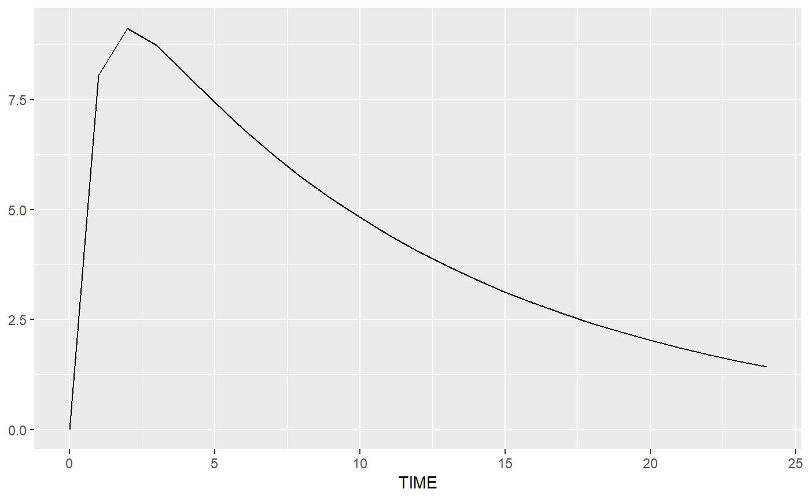
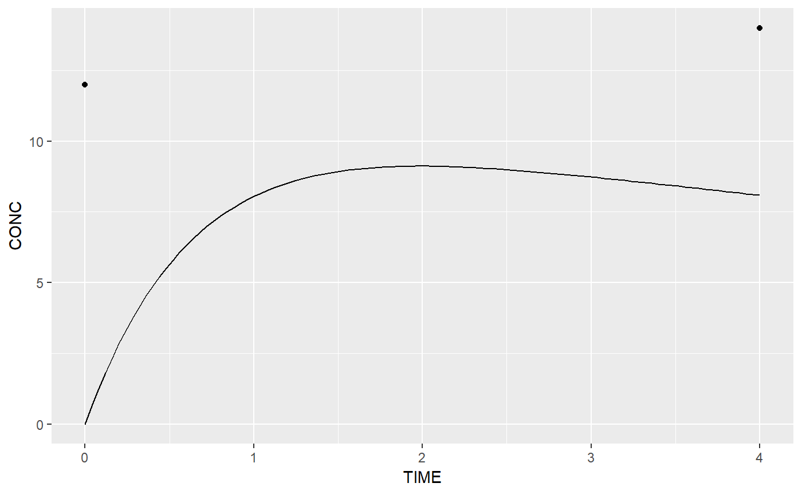

R/ggplot.R
stat_predict.RdIt can be compared to `stat_function(fun=predict, object, newdata, regimen, parameters, covariates, ...)`.
stat_predict(mapping = NULL, data = NULL, geom = "line", position = "identity", tdmorefit = NULL, regimen = NULL, parameters = NULL, covariates = NULL, xlim = NULL, n = 101, se.fit = FALSE, level = 0.95, ..., show.legend = NA, inherit.aes = TRUE)
| mapping | Set of aesthetic mappings created by |
|---|---|
| data | The data to be displayed in this layer. There are three options: If NULL, data will be generated on a grid of evenly spaced values along the x axis. A data.frame, or other object, will override the plot data. A numeric vector will be coered to a data.frame with column TIME. All objects will be fortified to produce a data frame. See fortify() for which variables will be created. A function will be called with a single argument, the plot data. The return value must be a data.frame, and will be used as the layer data. This data is used in the `predict()` call. |
| geom | The geometric object to use display the data |
| position | Position adjustment, either as a string, or the result of a call to a position adjustment function. |
| tdmorefit | if specified, overrides the fit object |
| regimen | Treatment regimen |
| parameters | Set parameters. If missing, or if only part of the parameters are specified, the other parameters are taken from the tdmorefit object |
| covariates | the model covariates, named vector, or data.frame with column 'TIME', and at least TIME 0 |
| xlim | Optionally, restrict the range of the function to this range. |
| n | Number of points to interpolate along |
| se.fit | TRUE to provide a confidence interval on the prediction, adding columns xxx.median, xxx.upper and xxx.lower |
| level | The confidence interval, or NA to return all mc.maxpts results |
| ... | ignored |
| show.legend | logical. Should this layer be included in the legends?
|
| inherit.aes | If |
Not all arguments have to be provided. Missing arguments can be inherited from the original `ggplot()` call, in a similar way as aesthetics.
This is implemented as a `stat` function.
If the model predicts an `y` or `x` output, those are passed to the geom instead. This may be outside of the range of the scales.
m1 <- tdmore(theopp_nlmixr) pred <- estimate(m1, regimen = data.frame(TIME=0, AMT=5)) ggplot2::ggplot(pred, ggplot2::aes(TIME)) + ggplot2::geom_point() + stat_predict(data=seq(0, 24))ggplot2::ggplot(data.frame(TIME=c(0, 4), CONC=c(12,14)), mapping=ggplot2::aes(x=TIME, y=CONC)) + ggplot2::geom_point() + stat_predict(tdmorefit=pred, xlim=c(NA, NA))